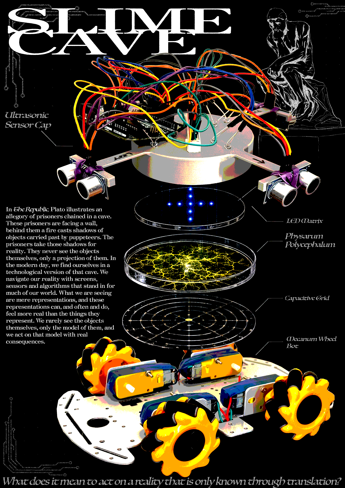

Slime Cave.
Semester 2, 2026.
In The Republic, Plato illustrates an allegory of prisoners chained in a cave. These prisoners are facing a wall, behind them a fire casts shadows of objects carried past by puppeteers. The prisoners take those shadows for reality. They never see the objects themselves, only a projection of them. In the modern day, we find ourselves in a technological version of that cave. We navigate our reality with screens, sensors and algorithms that stand in for much of our world. What we are seeing are mere representations, and these representations can, and often and do, feel more real than the things they represent. We rarely see the objects themselves, only the model of them, and we act on that model with real consequences.
This project was an ambitious concept for Autonomous Agents: Natural and Digital Systems in Art and Design that involved multiple layers of work. My plan was to create a system that would translate the outside world into something the slime mold could interpret and act upon, and its movement would be tracked and relayed to a mobility device so it could move around.
More on this project: https://docs.google.com/document/d/1jGKnRd2Sxjq7Zg6O0_s6oK_XBhs0FwM3mhTYj6aUkME/edit?tab=t.0 https://docs.google.com/presentation/d/1cVzF45CboL0BddM59UOULX8TqAxh6jWBQpn5oOH8Y3s/edit?usp=sharing

Slime Cave project poster. 3D printed cap, ultrasonic sensors, LEDs, Arduino Uno.